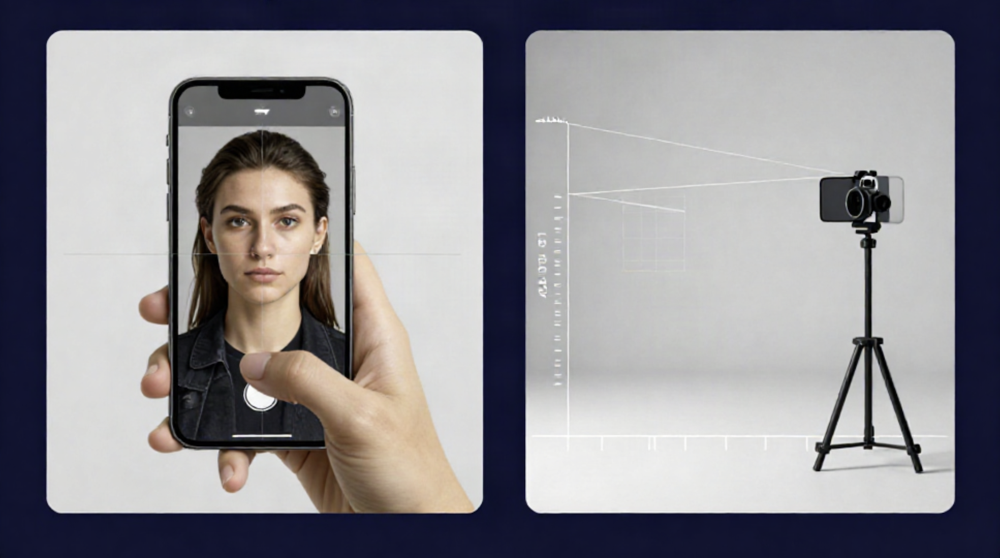

Technical reference · smartphone imaging
Smartphone Selfie Camera Geometry: Reproducible Portrait Capture
A practical, developer-facing protocol for making repeatable smartphone portrait captures. It focuses on camera geometry, capture settings, illumination, metadata, image-processing controls, and the limits of consumer-camera photographs.

Why close selfies can look different
Smartphones are frequently used at arm’s length. In that position, the camera is relatively close to a three-dimensional subject and commonly uses a wide-angle camera module. Regions closer to the camera occupy a larger angle of view than regions farther away. In a close portrait, this geometric relationship can change the apparent relative size and spacing of features in the rendered image.
The important technical point is that perspective is determined principally by camera-to-subject distance. Focal length changes the field of view and framing. When a longer-equivalent lens is selected and the camera is moved farther away to preserve the same framing, the perspective changes because the camera position changed—not because the lens independently “flattened” the subject.
Objective: reduce variable noise
A reproducible capture protocol is an engineering exercise in reducing uncontrolled variation. Smartphone imaging systems make many automatic choices: selecting a camera module, switching zoom modes, adjusting exposure, changing white balance, applying HDR, sharpening a face, smoothing skin, or altering the output through computational photography. Those choices can be useful for casual photographs, but they complicate comparisons across dates, devices, rooms, and lighting conditions.
The workflow below establishes a stable baseline. It does not eliminate all variation, but it documents and controls enough variables to make a sequence more technically interpretable.
Geometry
Fix camera height, camera position, subject distance, camera orientation, and the subject’s repeatable position.
Optics
Use the same camera module and the same native lens or zoom setting for each capture session.
Illumination
Keep lighting direction, source position, approximate intensity, and colour rendering as consistent as practical.
Data
Preserve original images and record device, capture configuration, location, date, view, and processing settings.
1. Equipment and capture environment
The recommended minimum setup is deliberately simple. A stable setup generally matters more than expensive hardware. Use a single phone consistently whenever possible, a stable mount, repeatable positions for the camera and subject, one controlled source of light, and a neutral background.
- A smartphone with a rear camera.
- A tripod, fixed mount, or other stable support.
- A remote shutter or the phone’s self-timer to reduce motion at capture.
- A neutral, matte background that does not create reflections or colour cast.
- A floor marker for the subject and a marker for the tripod position.
- One stable light source, such as a diffused LED or soft light.
- Optional: tape or a visual reference point at eye level for alignment.
2. Camera geometry and lens selection
2.1 Fix the camera-to-subject distance
Choose a camera-to-subject distance that can be physically repeated. For head-and-shoulders framing, a starting range of approximately 1.5 to 2.5 metres is often practical, depending on room size, camera module, and desired framing. Measure the chosen distance and mark the floor position for both the tripod and subject.
The selected distance itself is less important than repeatability. A fixed physical reference is more reliable than estimating distance by eye. If the room permits, leave the tripod at a marked location. If equipment must be removed, measure and document the position before each new session.
2.2 Choose a stable lens or native camera mode
When available, a rear-camera mode providing roughly 50–85 mm full-frame-equivalent framing can be a practical starting point for portrait-like framing. Depending on the phone, this may be labelled 2× or 3×. Device labels are not standardized: camera modules, sensor crops, and computational processing vary between phones.
Avoid switching randomly between the ultrawide, main, telephoto, front-facing, and digitally zoomed camera modes. For a series, document one chosen configuration and retain it. If a mode change is unavoidable, treat subsequent images as a new series or clearly label the transition in the metadata.
| Variable | Recommended practice | Reason |
|---|---|---|
| Camera position | Use a tripod and marked position. | Camera position controls perspective. |
| Distance | Measure and repeat a fixed distance. | Reduces geometric variation between sessions. |
| Lens or zoom mode | Use the same native rear-camera mode. | Reduces changes in framing and processing behaviour. |
| Digital zoom | Avoid it when a native optical camera mode is available. | Digital scaling may reduce detail and change processing. |
| Phone orientation | Use the same portrait or landscape orientation throughout. | Maintains a consistent frame and image pipeline. |
2.3 Keep capture mode constant
Smartphones can apply automatic enhancement even when an image looks unedited. Portrait blur, face reshaping, skin smoothing, beauty filters, AI enhancement, retouching, and scene optimization can alter the output. Disable these features where the application permits. If a phone cannot disable a particular processing feature, document the application, device model, and selected mode.
- Use the same phone and rear camera module for the complete series.
- Use the same lens selection or zoom setting.
- Keep output resolution and aspect ratio unchanged.
- Keep HDR, portrait mode, filters, and retouching settings unchanged.
- Disable beauty filters, face reshaping, and skin smoothing where possible.
- Do not overwrite original image files after capture.
3. Focus, exposure, and colour consistency
3.1 Focus control
Focus affects perceived sharpness and can affect image-processing decisions. Focus on a stable, high-contrast point near the intended plane of the subject. In a portrait-style image, a point near the nearer eye is commonly used. If the camera application supports focus lock, frame the subject, set focus, and lock it before capture.
3.2 Exposure control
Automatic exposure algorithms react to changes in the background, clothing, illumination, and scene brightness. This can make a sequence appear brighter or darker even when the physical setup is similar. Where supported, set exposure after lighting is in place and lock auto-exposure. Keep the same exposure-compensation setting for future sessions.
If the device does not allow exposure lock, the best fallback is to maintain the same lighting, background, and approximate time-of-day conditions. Record that limitation in the capture log.
3.3 White balance and lighting
White balance is the process by which a camera attempts to render neutral colours under different illumination. Automatic white balance may make different corrections from one capture to the next, especially when daylight is mixed with warm indoor lighting. Use one stable primary light source and avoid mixed lighting where possible.
A neutral LED or soft source with a nominal colour temperature around 5000 K can be practical, but consistency is more important than a particular Kelvin value. The key requirement is to keep the source, its position, its approximate distance, and the surrounding environment unchanged.
4. Positioning and geometric alignment
A repeatable workflow requires physical reference points. The simplest approach is to place a marker where the tripod stands and another where the subject stands. The camera should be mounted near eye level for a neutral reference view. Keep the phone level and avoid a strong upward or downward tilt unless that angle is intentionally part of the documented protocol.
4.1 Use a simple alignment reference
Enable the camera grid if it is available. Align the image horizon and maintain a similar head position within the frame. A small tape marker at eye height on a wall or mirror can provide a repeatable gaze target. The tripod-mounted camera lens should remain at the same height as that reference point.
Keep posture and stance consistent. For a fixed capture, place the heels or another stable point at the floor marker, keep the torso upright, and avoid changing camera position while the standard views are captured.

4.2 Standard capture views
Keep the camera fixed and rotate the subject rather than moving the lens. A standard series can include the following views:
- True front, 0 degrees: The subject faces the camera directly, with head upright and shoulders square to the sensor.
- Left oblique, approximately 45 degrees: The subject turns the head and torso approximately 45 degrees to the left while the camera stays fixed.
- Right oblique, approximately 45 degrees: Repeat the equivalent position on the right side.
- Left profile, approximately 90 degrees: The subject turns to the left until a true side-oriented view is achieved.
- Right profile, approximately 90 degrees: Repeat on the right.
The purpose of standard views is consistency of orientation and framing. The stated angles are practical reference points, not a substitute for calibrated measurement.
5. Capture cadence and repeatability
Decide the capture schedule before beginning a sequence. A fixed schedule, such as weekly or monthly, is usually more useful than a stream of irregular ad-hoc images. The appropriate interval depends on the documentation project, but it should be recorded and followed consistently.
A regular schedule does not convert photographs into objective biometric data. It simply reduces inconsistent sampling and makes the resulting visual timeline easier to organize, inspect, and reproduce.
6. File naming, metadata, and version control
A consistent file name makes a capture set easier to search, sort, compare, and preserve. Use a machine-sortable date at the start of every filename. Include enough configuration information to identify the capture context without relying on memory.
YYYY-MM-DD_project_camera_lens_distance_view_lighting_v01.jpgExample:
2026-08-16_demo_phoneA_3x_2m_front_LED5000K_v01.jpgA filename cannot hold every relevant detail. Keep a simple capture log in Markdown, CSV, or JSON. The log should preserve configuration details and note any deviation from the standard setup.
{
"date": "2026-08-16",
"device": "Phone A",
"camera": "rear telephoto",
"zoom_mode": "3x",
"distance_m": 2.0,
"camera_height": "eye level",
"view": "front",
"light": "LED, nominal 5000K",
"focus": "locked",
"exposure": "locked",
"processing": "beauty filters disabled",
"version": "v01"
}Original files and privacy
Retain original image files without overwriting them. Derivative images, crops, illustrations, or web-optimized copies should be clearly labelled as derivatives. Do not upload identifiable portraits, embedded location data, or other sensitive information to a public repository without explicit permission and an appropriate privacy review.
A private repository or encrypted storage is generally more appropriate for sensitive images. This public technical page should use diagrams, generic illustrations, or fully authorized images rather than private capture sets.
7. Limitations of smartphone portrait images
A smartphone portrait is a rendered two-dimensional image, not a precise physical model. Even with careful setup, visual differences can arise from optics, camera software, movement, lighting, focus distance, compression, screen rendering, and editing pipelines. A protocol improves consistency; it does not eliminate these variables or transform a phone into a calibrated measurement instrument.
- Different phone models use different lenses, sensors, crop factors, and algorithms.
- Some devices automatically switch camera modules in low light or at certain zoom levels.
- HDR, denoising, sharpening, and face-aware processing may vary between captures.
- Small differences in pose, head tilt, facial expression, or camera height can alter appearance.
- Lighting direction and shadow can strongly affect apparent contours and colour.
- Social-media uploads may crop, compress, resize, or reprocess the original image.
Technical summary
Distance first
Camera-to-subject distance is the primary determinant of perspective. Keep it fixed and physically documented.
Keep the camera stable
Use a tripod, constant height, constant orientation, and a consistent lens or camera mode.
Control the light
Use one stable source and avoid mixed lighting. Record the setup and lock exposure or white balance where supported.
Preserve context
Retain original files and capture metadata so later viewers can understand the conditions under which an image was made.